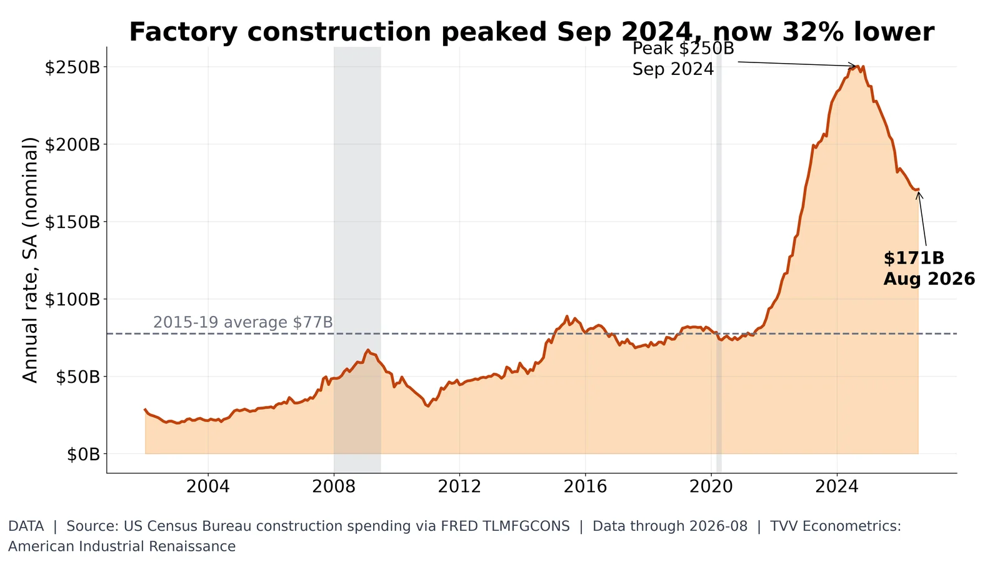
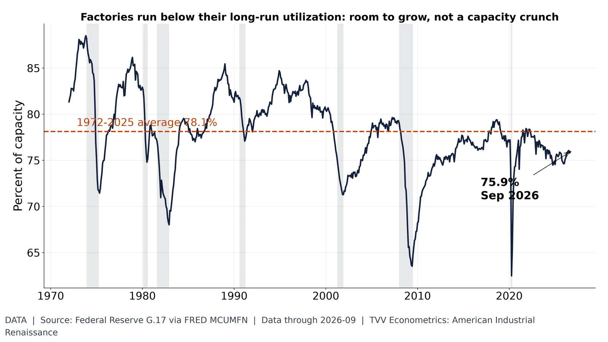
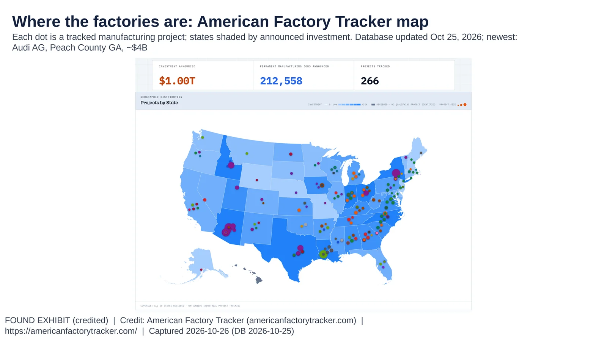
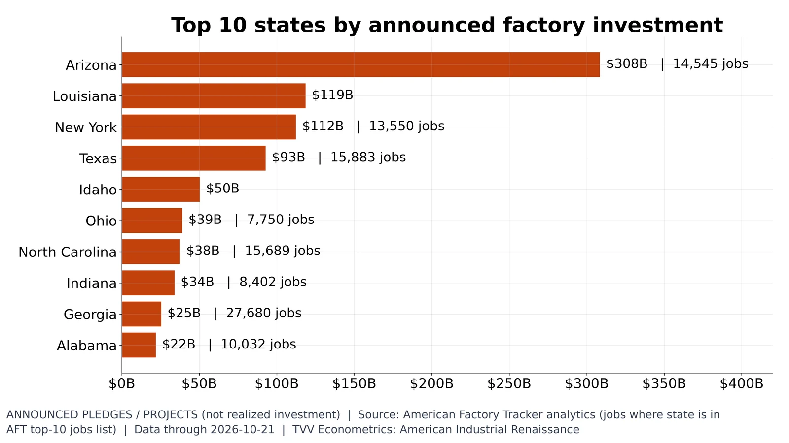

3. Factory Construction and Capacity

Manufacturing construction $171B annualized (Aug 2026), 2.2x the 2015-19 average; peak Sep 2024. Census.
Data | Data date: 2026-08
- Aug 9 and Aug 16, 2022: CHIPS Act and IRA signed https://www.congress.gov/bill/117th-congress/house-bill/4346 https://www.congress.gov/bill/117th-congress/house-bill/5376
- Sep 2024: construction peak about $248B annualized (Data) https://fred.stlouisfed.org/series/TLMFGCONS
- Aug 2026: $170.7B, 2.2x the 2015-19 average (Data) https://fred.stlouisfed.org/series/TLMFGCONS
Sources: https://fred.stlouisfed.org/series/TLMFGCONS https://www.census.gov/construction/c30/c30index.html

Manufacturing utilization 75.9% (Sep 2026) vs 78.1% long-run average. Federal Reserve G.17.
Data | Data date: 2026-09
- Jan 2009: utilization 65.6% (Data) https://fred.stlouisfed.org/series/MCUMFN
- Jan 2019: 78.5% (Data) https://fred.stlouisfed.org/series/MCUMFN
- Sep 2026: 75.9% vs 78.1% long-run average (Data) https://fred.stlouisfed.org/series/MCUMFN

AFT map: 266 tracked projects, $1.004T announced, 212,558 permanent jobs; database updated Oct 25, 2026.
Exhibit | Data date: 2026-10-26 (DB 2026-10-25)
- Oct 21, 2026: 265 projects mapped, $1.00T announced (Announced) https://americanfactorytracker.com/
- Arizona $308.5B, Louisiana $118.5B, New York $112.3B lead (Announced) https://americanfactorytracker.com/analytics
- Texas has the most projects, 25 (Data) https://americanfactorytracker.com/analytics
- Oct 25, 2026: 266 projects mapped, $1,004.39B announced, 212,558 jobs (Announced) https://americanfactorytracker.com/
- Oct 24, 2026: Audi AG added, Middle Georgia Megasite, Peach County GA, ~$4B, 4,500 jobs; AFT status Announced (Announced) https://americanfactorytracker.com/ https://gov.georgia.gov/press-releases/2026-10-24/gov-kemp-audi-ag-selects-georgia-invest-4-billion-first-us-manufacturing https://www.audi.com/en/press-releases/audi-to-establish-first-us-production-site-in-georgia-investing-4-billion-and-creating-4500-jobs-18420 https://www.cnbc.com/2026/10/24/trump-audi-factory-georgia.html
Sources: https://americanfactorytracker.com/ https://gov.georgia.gov/press-releases/2026-10-24/gov-kemp-audi-ag-selects-georgia-invest-4-billion-first-us-manufacturing https://www.audi.com/en/press-releases/audi-to-establish-first-us-production-site-in-georgia-investing-4-billion-and-creating-4500-jobs-18420 https://www.cnbc.com/2026/10/24/trump-audi-factory-georgia.html

Arizona $308B leads; Louisiana $119B, New York $112B; Georgia $29.4B incl. Audi, most jobs (32,180). AFT, Oct 25, 2026.
Announced | Data date: 2026-10-25 (AFT database update)
- Oct 21, 2026: Arizona $308.5B in 11 projects (TSMC, Intel) (Announced) https://americanfactorytracker.com/analytics
- Louisiana $118.5B, New York $112.3B (Micron Clay $100B) (Announced) https://americanfactorytracker.com/forecast
- Texas $92.8B across 25 projects (Announced) https://americanfactorytracker.com/analytics
- Oct 25, 2026: Georgia $29.37B across 20 projects; most jobs of any state, 32,180 (Announced) https://americanfactorytracker.com/analytics
- Oct 24, 2026: Audi GA ~$4B, 4,500 jobs lifts Georgia from $25.37B (Announced) https://americanfactorytracker.com/ https://gov.georgia.gov/press-releases/2026-10-24/gov-kemp-audi-ag-selects-georgia-invest-4-billion-first-us-manufacturing https://www.audi.com/en/press-releases/audi-to-establish-first-us-production-site-in-georgia-investing-4-billion-and-creating-4500-jobs-18420 https://www.cnbc.com/2026/10/24/trump-audi-factory-georgia.html
Sources: https://americanfactorytracker.com/analytics https://gov.georgia.gov/press-releases/2026-10-24/gov-kemp-audi-ag-selects-georgia-invest-4-billion-first-us-manufacturing https://www.audi.com/en/press-releases/audi-to-establish-first-us-production-site-in-georgia-investing-4-billion-and-creating-4500-jobs-18420 https://www.cnbc.com/2026/10/24/trump-audi-factory-georgia.html https://americanfactorytracker.com/